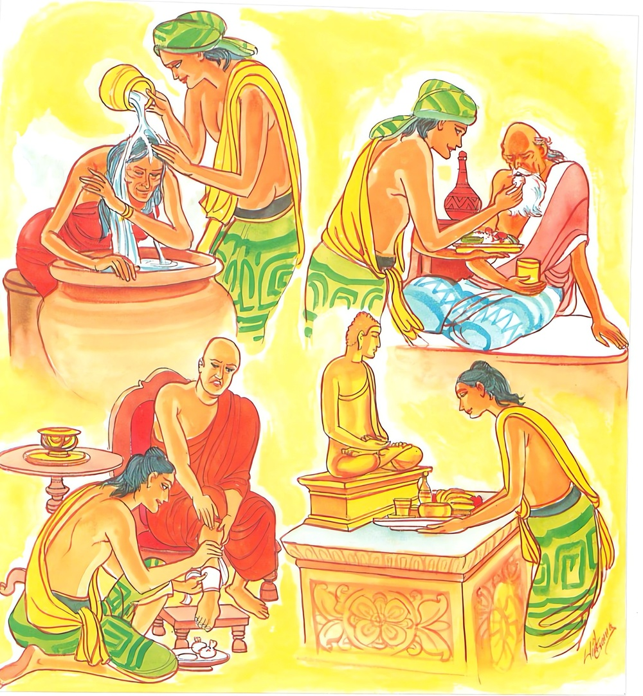
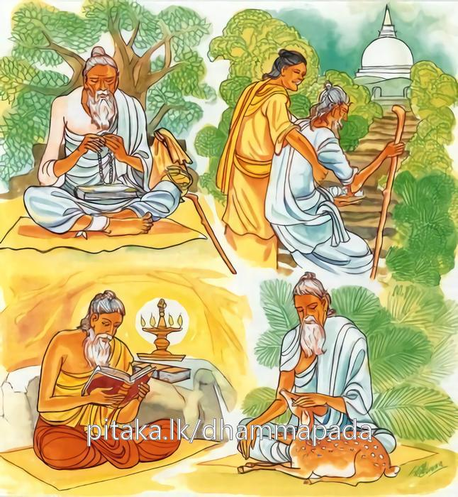

23-8 මාරයා පිළිබඳ කථා පුවත
මෙම කතාව සද්ධර්ම සාගරයෙන් ද කියවන්න.
අත්ථම්හි ජාතම්හි සුඛා සහායා
තුට්ඨි සුඛා යා ඉතරීතරෙන
පුඤ්ඤං සුඛං ජීවිතසඞ්ඛයම්හි
සබ්බස්ස දුක්ඛස්ස සුඛං පහාණං.
කටයුත්තක් උපන් කල්හි (එය සපයන්නට සමත්) යහළුවෝ සුවයහ. හීන වූ ද ප්රණීත වූ ද, මඳ වූ ද බොහෝ වූ ද, (තමා සතු පසයෙකින් උපදනා) යම් සතුටෙක් ඇද්ද, එය සුව ය. මරණය ළං වූ කල්හි මහත් කොට කළ පින සුව ය. සියලු සසර දුක දුරැ ලීම (හෙවත් රහත්බව) සුව ය.
සුඛා මත්තෙය්යතා ලොකෙ අථො පෙත්තෙය්යතා සුඛා
සුඛා සාමඤ්ඤතා ලොකෙ අථො බ්රහ්මඤ්ඤතා සුඛා.
ලොවැ, මවු කෙරෙහි මොනොවට පිළිපැදීම සුව ය. නැවැත පියා කෙරෙහි මොනොවට පිළිපැදීම සුව ය. ලොව මහණුන් කෙරෙහි මොනොවට පිළිපැදීම සුව ය. නැවැත (බුදු පසේබුදු රහත් යන) ක්ෂීණාස්රව බ්රාහ්මණයන් කෙරෙහි මොනොවට පිළිපැදීම සුව ය.

සුඛං යාව ජරා සීලං සුඛා සද්ධා පතිට්ඨිතා
සුඛො පඤ්ඤාය පටිලාභො පාපානං අකරණං සුඛං.
ශීලය (තරුණයනට ද වෘද්ධියනට ද එක සේ හොබනා බැවින්) ජරා වයස දක්වා සුව ය. (ලොවී ලොවුතුරා) සැදැහැව නිසල වැ පිහිටියා සුව ය. (ලොවී ලොවුතුරා) නුවණ ලැබීම් සුව ය. පව් නොකිරීම සුව ය.

"අත්ථමහි ති” යන මේ ධර්ම දේශනය බුදුහු හිමවත් පෙදෙසේ අරඤ්ඤා කුටියේ වැඩසිටියදී මාරයා නිමිති කරගෙන දේශනා කළහ.
එකල රජවරු මිනිස්සු පිඩාවට ලක්කර රාජ්යය කරත්. එහි දී භාග්යවතුන් වහන්සේ අධාර්මික රජවරුන්ගේ රාජ්යයන්හි දඩුවම් වලින් හා භාණ්ඩ පැහැර ගැනීම් වලින් පීළිත එම මිනිසුන් දැක කාරුණිකව මෙලෙස සිතූහ. විනාශ නොකර, ඝාතනය නොකර. ජය නොගෙන දඬුමුගුරු නොමැතිව ශෝක නොකර සෝක නොකරවා ධර්මයෙන් රාජ්යයක් කිරීමට හැකිවේද?
පාපී වූ මාරතෙම භාග්යවතුන්ගේ මේ පරිචිතකය දැන, ගෞතම තෙමේ දැහැමින් රාජ්යය කරන්නට හැකිවේදැයි කල්පනා කරයි. ගෞතමයන් රාජ්යය කරන්නට කැමති වේ නම්, පමා නොවී එය කළ යුතුයි - රාජ්යය සඳහා පහසුකම් ලබා දී ඔවුන්ගේ උත්සාහ වඩවන්නට යමියි සිතා ශාස්තෲන් වෙත ගොස් මෙසේ කීය. භාග්යවතුන් වහන්සේ රාජ්යය විචාරවා සුගතයන් වහන්සේ විනාශ නොකර, ඝාතනය නොකර. ජය නොගෙන, (යුද්ධ නොකොට) දඬු මුගුරු නැතිව, ධර්මයෙන් රාජ්යය කෙරේවා.
ඉක්බිති ශාස්තෲන් වහන්සේ පාපී මාරය මේ ඇයි ද ඔබ මගේ කුමන විතර්කයක් දුටුවේද. ඔබ මට කුමක් කියන්නේ ද? ස්වාමීනි, භාග්යවතුන් වහන්සේ සතර සෘද්ධිපාද මැනවින් වැඩුයේය. ඔබ වහන්සේ අපේක්ෂ කරන්නේ නම් හිමවත් පර්වතය රත්රන් බවට පරිවර්තනය කළ හැකිය. ඔබට ධනය ඇත. මම ද ඔබට ධනය දෙමි ඔබ වහන්සේ ධර්මයෙන් රාජ්යය කළ මැනව.
හිමවත් පර්වතය රන් රිදී වුවත් හුදෙක් මට එයින් කවර ප්රයෝජනයක් ද, යමෙක් දුක නොදනීද. දුකෙහි හේතුව නොදනීද, නැවත ඉපදීමේ හේතුව හා ලෝකයේ පැවැත්ම නොදනීද, එවැනි වූ තාගේ අවවාද භික්මීම් වලින් කවර අර්ථයක්ද, ඔබ සමග මගේ කිසිදු කථාවක් නැත.
දිවියෙහි කලණ මිතුරන් ලැබුමද සැපය
ලද දෙයකින් තුටුව දිවි ගෙවුම ද සැපය
මරණය ලගාවන විට කුසලය සැපය
මොක් සුව විඳුම හැම සැපතට වැඩි සැපය.
කිසියම් කටයුත්තක් ඇති කල්හි යහළුවෝ සැපගෙන දේ තමන් සන්තක සුළු දෙයින් හෝ සතුටුවීම සැපයි මරණ සන්නයේ දී පින සැපයි. රහත් බව ඒකාන්ත සැපයයි මවට, පියාට, මහණුන්ට, රහත් උතුමන්ට සත්කාර කිරීම සැපයි. ජරාව තෙක් සිල් රැකීම ශ්රද්ධාව පිහිටීම. නුවණ ලැබීම පව් නොකිරීම සැපයි.
එහි අත්ථමභී පැවිද්දෙකුට සිව්රු මැසීම්, සාමය ඇති කිරීම් හා ගිහියෙකුට කෘෂිකර්ම, වාණිජ, කටයුත්තක් එළඹ සිටි කල්හි බලවත් පක්ෂය සංසිඳවීමෙහි මැඩ පැවැත්වීමෙහි, යම්කිසි කෘත්යයක් උපන්විට ඒ කෘත්යය සම්පූර්ණ කරලීමට හැකියාව ඇති එබඳු මිත්රයෝ, සුඛා සහායා සුවගෙන දේ යන අර්ථයි. තුටඨිසුඛා යම්හෙයකින් ගිහියන් ද ලද දෙයින් සතුටු නොවී, ගෙවල් බදීම් ආදිය කරත්, පැවිද්දේ නානාවිධ එක්වියි අනේසන ධර්මයන් හි යෙදීත් සතුටු නොවෙත්, තමා එහෙයින් යමෙක් ඉතරීතරෙන සුළු වූ හෝ මහත් වූ හෝ තමන් සන්තක දෙයින් සතුටු වීම. සුබා සැපය යන අර්ථයි. ප්රඤ්ඤනති මරණ කාලයෙහි දී තම අදහස් පරිදි කරන ලද පින්කම සැප ගෙන දේ. සබ්බස්සා සියලු සසර දුක් ප්රහීණ කරන අරිහත්වය සියල්ලන්ටම වඩා සුවය. මතෙතයචි මව් කෙරෙහි මනා පිළිවෙත් ඇති බව, පිතරි පියා කෙරෙහි මනා පිළිවෙත් ඇති බව, මව්පියන්ට උවැටන් කිරීම, කළයුතුයි. මව් පියෝ දූ පුතුන් තමන්ට උපස්ථාන නොකරන බව දැන තමන් සතු දේ පොළවෙහි නිධන් කරයි. අනුන්ට හෝ දෙති. මව් පියන්ට උපස්ථාන නොකරන පුද්ගලයා නින්දා ලබයි මරණින් පසුව ගුථ නරකයේ උපදිත්. යම්කිසිවෙක් දෙමාපියන්ට උපස්ථාන කරයිද ඔහු ඔවුන්ට සම්පත් ධනය වෙයි. ප්රශංසාද ලබත් මරණින් මතු ස්වර්ගයේ උපදිත්. එහෙයින් දෙපරිද්දෙකින් සැප විදී කියයි. පැවිද්දන් කෙරෙහි මනා පැවැත්මයි. බ්රමඤ්ඤතාති බැහැර කරන ලද පවු ඇති බුදු - පසේබුදු ශ්රාවකයින් අතර මනාව පිළිසදී ඔවුන්ට සිවුපසයෙන් උවටැන් කිරිම පරිත්යාග කිරීම කියන ලදී. මෙයද ලොව සැපයකි. සීලනති - මණිකුණ්ඩල රතු වස්ත්ර ආදි අලංකාර වීම නම් ඒ ඒ වයසේ සිටි අයටම ශෝභාමත් වේ. මෙහි ළදරුවන්ගේ අලංකාරය මහළු අයටද මහල්ලන්ගේ අලංකාරය ළමාකලටද හොබී. දකින්නෝ උමතු කෙනෙක් උමතු අයෙකියි ගර්හා කරති. දෝෂයක්ම දකිති. පන්සිල් දසසිල් ආදිය දරුවාටද මහල්ලාටද සියල්ලන්ටම හැම වයසකදීම සුදුසුවේ. සුඛං යාව ජරා සීලං - සද්ධා පතිට්ඨිතාති ලෞකික ලෝකෝත්තර වශයෙන් ශ්රද්ධාව දෙයාකාරය ශ්රද්ධාව නිශ්චලව පිහිටීම සුවයකි. ලෞකික ලෝකෝත්තර ප්රඥාව ලැබීම සුවයකි.
"පාපානං අකරනනති” ඒ දඬු කැඩීම්, පාරවල් වැසීම් ආදී පවු නොකිරීම මෙලොව සුවයකි. යන අර්ථයි. දෙසුම අවසන බොහෝ දේවතාවන්ට ධර්මාවබෝධය සිදුවිය.
නාග වර්ග වර්ණනය නිමා විය.
විසිතුන්වැනි වර්ගයයි.